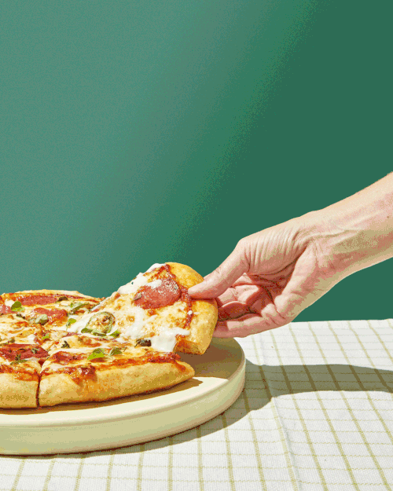

Pizza

Description
- Pizza, dish of Italian origin consisting of a flattened disk of bread dough topped with some combination of olive oil, oregano, tomato, olives, mozzarella or other cheese.
- Baked quickly—usually, in a commercial setting, using a wood-fired oven heated to a very high temperature—and served hot.
- Italy has many variations of pizza. The Neapolitan pizza, or Naples-style pizza, is made specifically with buffalo mozzarella
- The Ligurian pizza resembles the pissaladière of Provence in France, adding anchovies to olives and onions
- Pizza has also spread from Italy throughout much of the rest of the world, and, in regions outside of Italy, the toppings used vary with the ingredients available and the flavour profile preferred.
Ingredients
- 2 pounds pizza dough, divided into 4 balls
- 1 cup marinara sauce, store bought or homemade
- 1 pound mozzarella cheese (low moisture), grated
- 8 ounces spicy Italian sausage
- 2 teaspoons red pepper flakes
- 1 leaf fresh basil, for garnish
- Extra flour, for rolling and throwing the pizza
Steps
- Warm the dough (if refrigerated).
- Preheat the oven.
- Prepare the hot honey dip.
- Assemble the pizza.
- Cook the pizza.
- Prepare the next pizza.
- Cool briefly and serve.